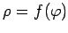

Inhalt Index DeskTop Bronstein

 Geometrie Differentialgeometrie Ebene Kurven Ausgezeichnete Kurvenpunkte und Asymptoten
Geometrie Differentialgeometrie Ebene Kurven Ausgezeichnete Kurvenpunkte und Asymptoten


Singulärer Punkt ist der allgemeine Begriff für verschiedene spezielle Kurvenpunkte.
Die angegebenen singulären Punkte sind in den danach folgenden Abbildungen dargestellt.
Singularitäten dieser Art treten nur bei Kurven transzendenter Funktionen auf.
Den Knickpunkten entspricht ein endlicher Sprung der Ableitung 
Punkten, in denen die Kurve abbricht, entsprechen Unstetigkeitsstellen der Funktion y = f(x) mit endlichem Sprung oder ein direkter Abbruch.
Asymptotische Punkte lassen sich am einfachsten für Kurven bestimmen, die in Polarkoordinaten gemäß  gegeben sind. Wenn für oder der Grenzwert wird, ist der Pol ein asymptotischer Punkt.
| Beispiel A |
|
Der Koordinatenursprung ist für die Kurve ein Knickpunkt. |
| Beispiel B |
|
Die Punkte (1,0) und (1,1) der Funktion sind Unstetigkeitsstellen.
|
| Beispiel C |
|
Die logarithmische Spirale besitzt einen asymptotischen Punkt.
|
Doppelpunkte, Dreifachpunkte usw. werden unter der Bezeichnung Mehrfachpunkte zusammengefaßt. Zu ihrer Bestimmung wird die Kurve ausgehend von der Gleichungsform F(x,y) = 0 untersucht. Ein Punkt A mit den Koordinaten die gleichzeitig die drei Gleichungen und Fy = 0 erfüllen, ist ein Doppelpunkt, wenn von den drei Ableitungen 2. Ordnung und Fyy wenigstens eine nicht verschwindet. Im entgegengesetzten Falle ist A ein Dreifachpunkt oder ein Punkt mit höherer Mehrfachheit.
Die Eigenschaften eines Doppelpunktes hängen vom Vorzeichen der Funktionaldeterminante ab:
| (3.477) |
| (3.478) |
| (3.479) |
Zur genaueren Untersuchung des Mehrfachpunktes empfiehlt es sich, das Koordinatensystem in den Punkt A zu verlegen und so zu drehen, daß die x-Achse zur Kurventangente im Punkt A wird. Aus der Gestalt der Gleichung kann dann erkannt werden, ob es sich um einen Rückkehrpunkt 1. oder 2. Art handelt oder um einen Selbstberührungspunkt.
| Beispiel A |
|
Untersuchung der Lemniskate mit Das Gleichungssystem liefert die drei Lösungen von denen nur die erste der Bedingung F = 0 genügt. Einsetzen von (0,0) in die 2. Ableitungen ergibt d.h., im Koordinatenursprung schneidet sich die Kurve selbst; die Richtungskoeffizienten der Tangenten ergeben sich zu ihre Gleichungen lauten |
| Beispiel B |
|
von den Punkten (0,0), und liegt nur der erste auf der Kurve. Weiter ist d.h., der Koordinatenursprung ist ein isolierter Punkt. |
| Beispiel C |
|
Die Gleichungen liefern nur die eine Lösung (0,0), die auch die Gleichung F = 0 erfüllt. Außerdem ist |
Wenn die Gleichung keine konstanten Glieder und keine Glieder ersten Grades enthält, dann ist der Koordinatenursprung ein Doppelpunkt. Die Gleichung zur Bestimmung der zugehörigen Tangenten erhält man durch Nullsetzen der Summe der Glieder 2. Grades. Wenn die Gleichung auch keine quadratischen Glieder enthält, dann ist der Koordinatenursprung ein Dreifachpunkt.
| Beispiel |